Pengalaman
Asisten Praktikum Internet of Things
Prodi Sains Atmosfer dan Keplanetan, ITERA · Feb – Jun 2026- Terpilih sebagai 1 dari 3 asisten untuk kelas berisi 26 mahasiswa.
- Membimbing mahasiswa merakit rangkaian dan melakukan troubleshooting secara mandiri.
- Menyusun modul praktikum serta menilai laporan, keaktifan, dan kemampuan praktikan.
- Mengampu web dasar (HTML, CSS, JavaScript), Arduino/ESP8266, sensor dan aktuator, serta data logging dengan RTC dan MicroSD.
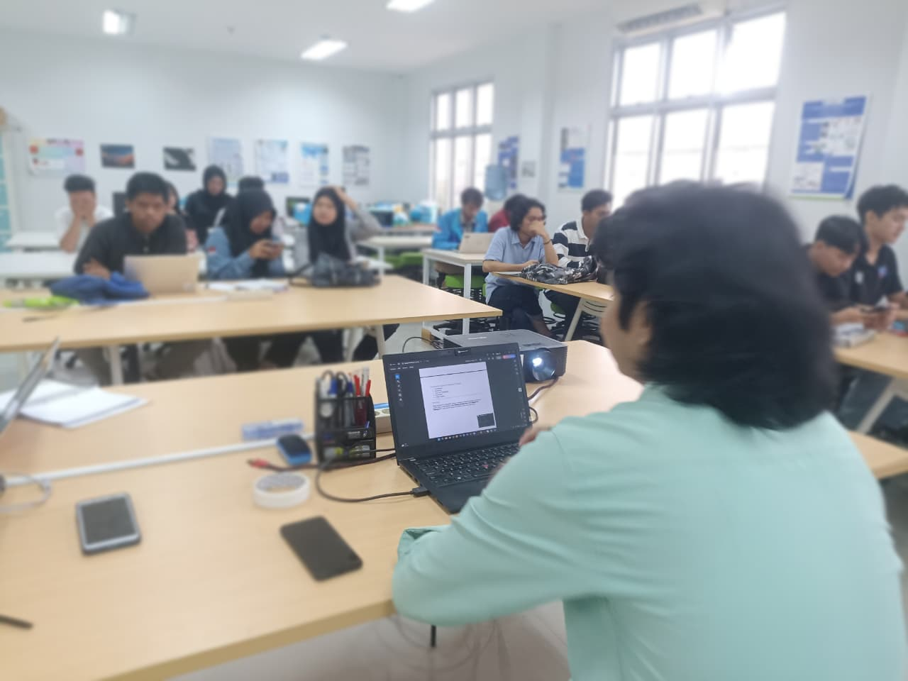
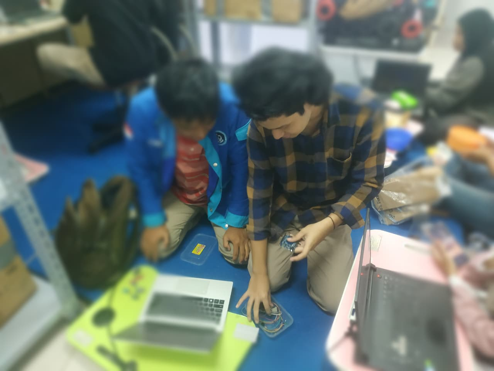
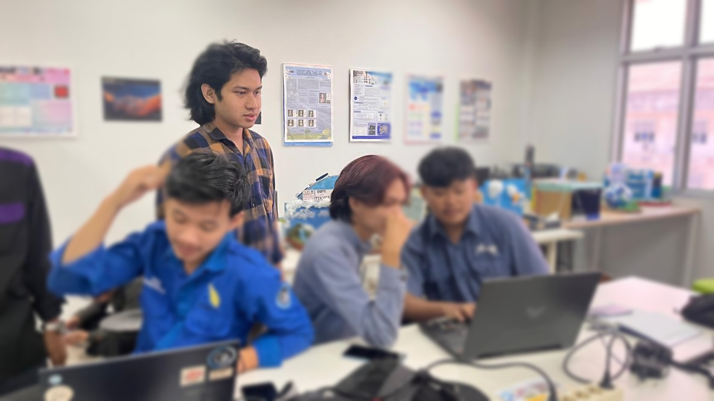
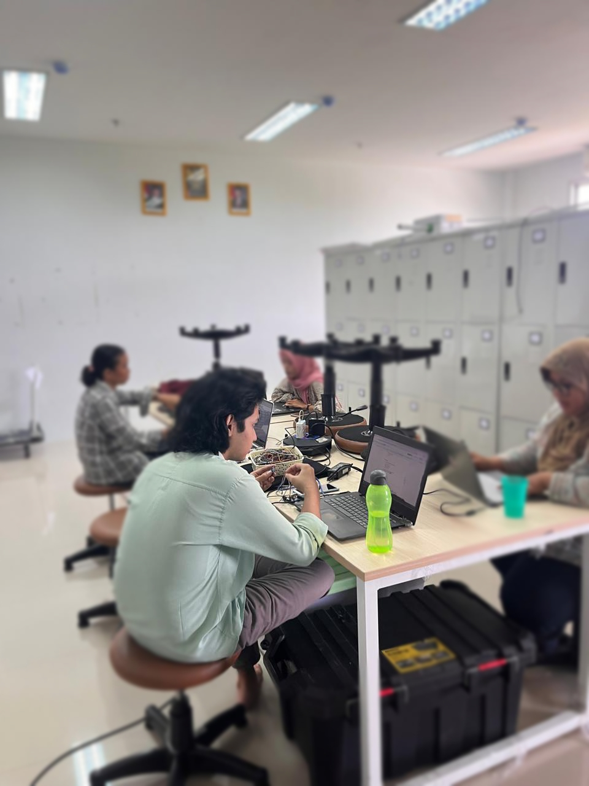
Peneliti Utama (Tugas Akhir & Publikasi Ilmiah)
ITERA · 2025 – 2026- Meneliti hubungan parameter angin Matahari (kecepatan, IMF Bz, kerapatan proton) dan indeks Dst dengan sinyal radio HF 20,110 MHz dari antena Radio TEMPOYAK, Observatorium Astronomi ITERA (studi kasus Oktober 2025).
- Mengolah data sinyal beresolusi 0,1 detik (sekitar 504.000 titik per hari, 6 hari pengamatan), merata-ratakannya per jam, mengonversinya ke dB, lalu menyelaraskannya dengan data NASA OMNIWeb.
- Menganalisis 84 pasangan data (24 pengujian) dengan Python di Google Colab.
- Hasil: sinyal punya pola propagasi harian yang konsisten (puncak sekitar pukul 12.00–14.00 WIB), tetapi tidak ada korelasi yang signifikan setelah koreksi.
- Melaporkan hasil beserta keterbatasannya, termasuk kemungkinan interferensi radio (RFI) dan analisis time lag.
- Mempresentasikan dan menerbitkan artikel ilmiah pada SiNaFi-XII, Universitas Pendidikan Indonesia, Bandung.
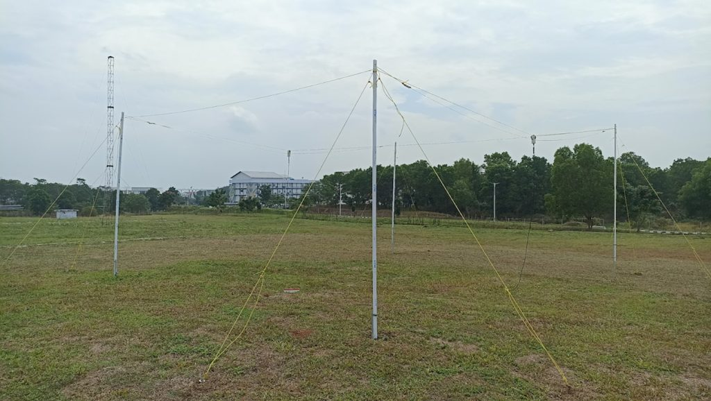
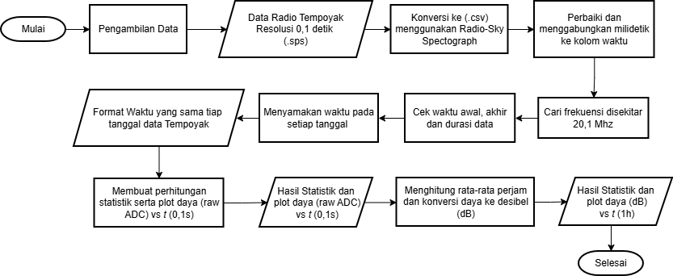
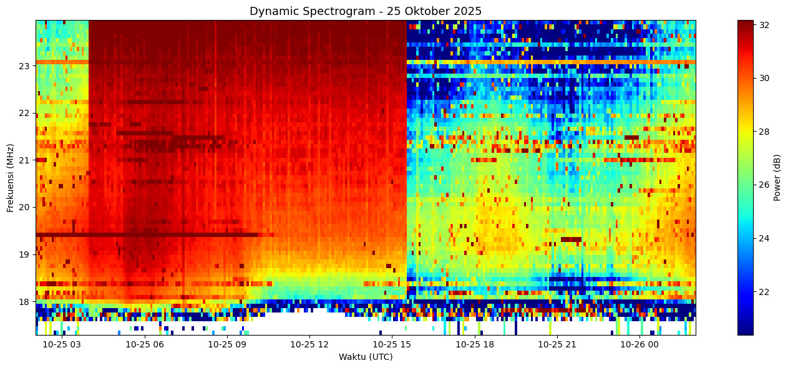
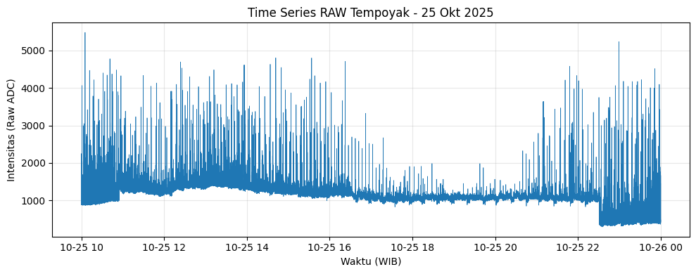
Peserta Kerja Praktik
Observatorium Bosscha, ITB · Jun – Jul 2025- Mempelajari teleskop portabel Vixen VMC200L, mounting Vixen Sphinx, dan kamera CCD SBIG ST-402ME (CCDOps), serta mengikuti pengamatan objek langit pagi dan malam.
- Bersama tim 3 orang, menyusun panduan drift alignment untuk polar alignment teleskop.
- Mengukur pitch ulir (pitch gauge) dan jarak ke pusat rotasi kenop azimuth dan altitude, lalu menghitung pergeseran sudut per putaran: 1,27° (azimuth) dan 0,86° (altitude).
- Membuat ilustrasi teknis dengan CorelDRAW, menyusun laporan individu, dan mempresentasikan hasil tim di hadapan staf dan peneliti Bosscha.
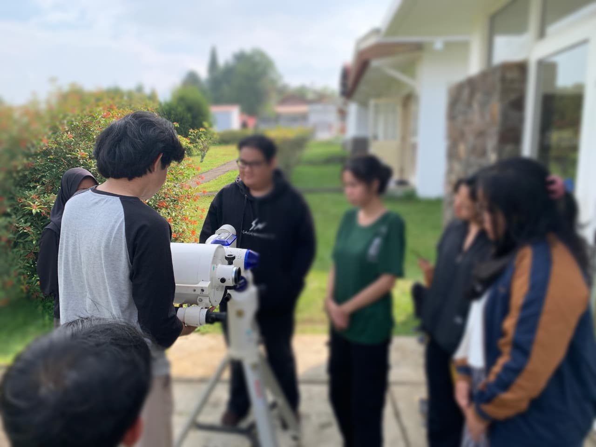
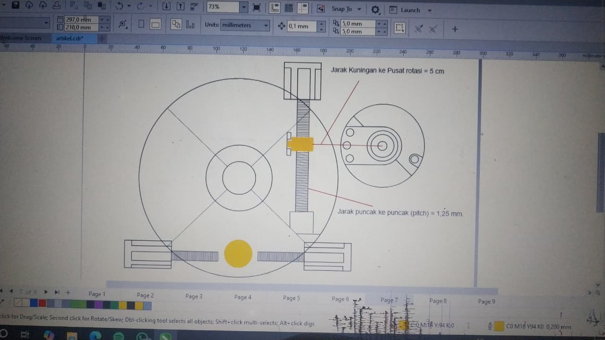
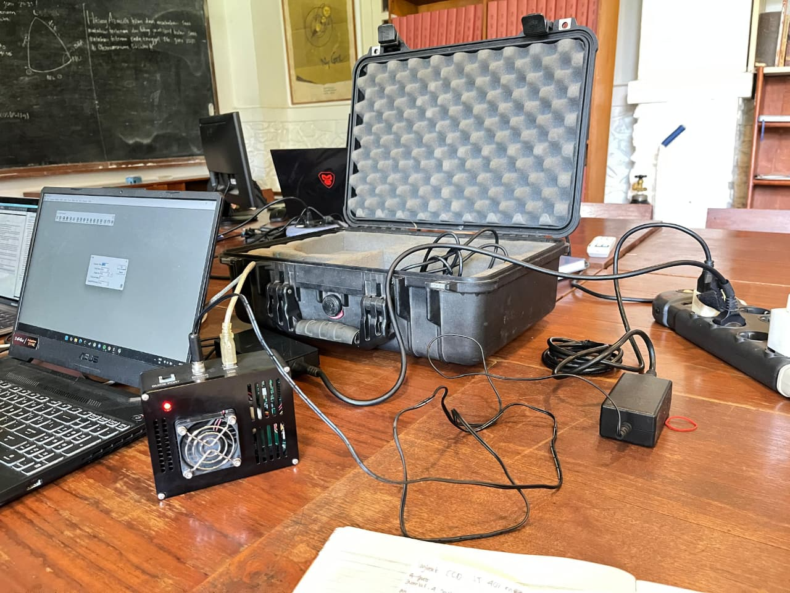
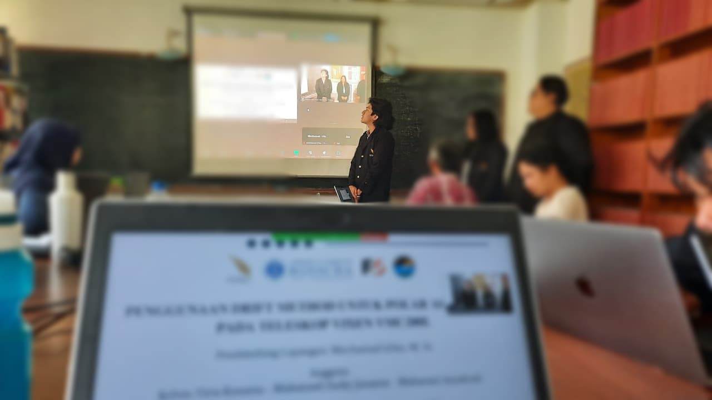
Presenter, SiNaFi-XII
Universitas Pendidikan Indonesia, Bandung · 8 Agustus 2026- Mempresentasikan hubungan parameter angin Matahari dengan sinyal radio HF di Seminar Nasional Fisika ke-12.


Master of Ceremony, Sosialisasi Bank Sampah
KKN Desa Hajimena, Lampung Selatan · 7 Januari 2025- Membawakan acara di hadapan masyarakat dan ibu-ibu PKK desa.


.webp)
.webp)
.jpeg)
.webp)